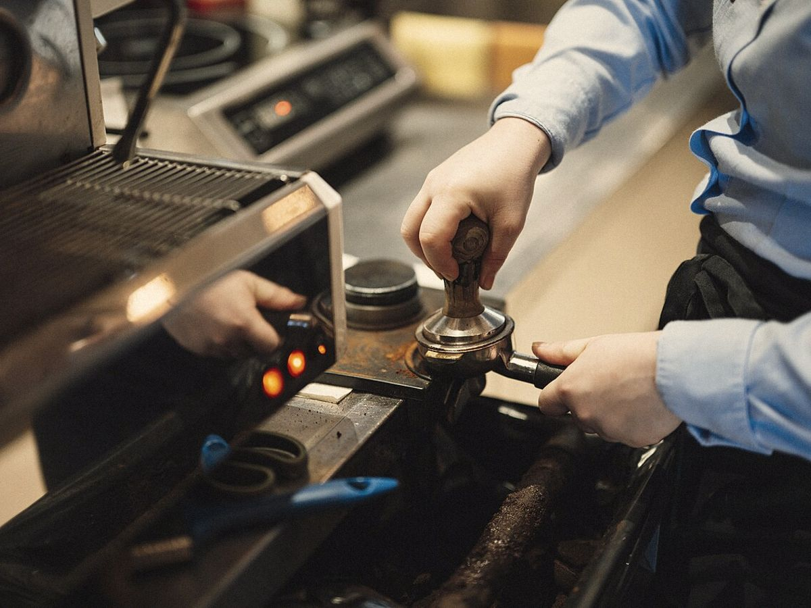
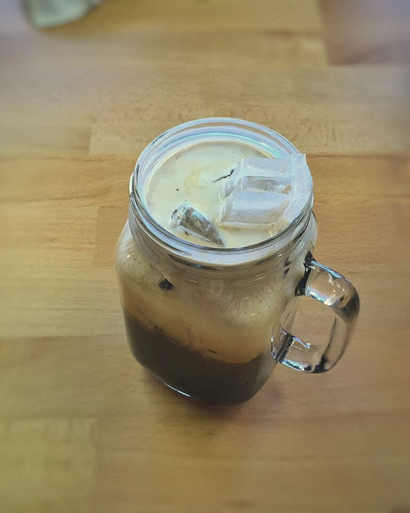

จากรถเข็น
หน้าซอย
ปี 2557 พี่ต้อมขายโอเลี้ยงจากรถเข็นหน้าซอยเกษมสันต์ วันนี้มีหน้าร้านแล้ว แต่ยังชงด้วยถุงผ้าแบบเดิม
หลายคนสั่งแก้วเดิมทุกวัน ชื่อร้านก็มาจากตรงนั้น
สั่งทาง LINE ก่อนออกจากออฟฟิศ เดินจาก BTS สนามกีฬาฯ 3 นาที แก้วรอคุณอยู่แล้ว
ดูเมนู





ปี 2557 พี่ต้อมขายโอเลี้ยงจากรถเข็นหน้าซอยเกษมสันต์ วันนี้มีหน้าร้านแล้ว แต่ยังชงด้วยถุงผ้าแบบเดิม
หลายคนสั่งแก้วเดิมทุกวัน ชื่อร้านก็มาจากตรงนั้น
ซอยเกษมสันต์ 2 เดิน 3 นาทีจาก BTS สนามกีฬาแห่งชาติ ทางออก 1